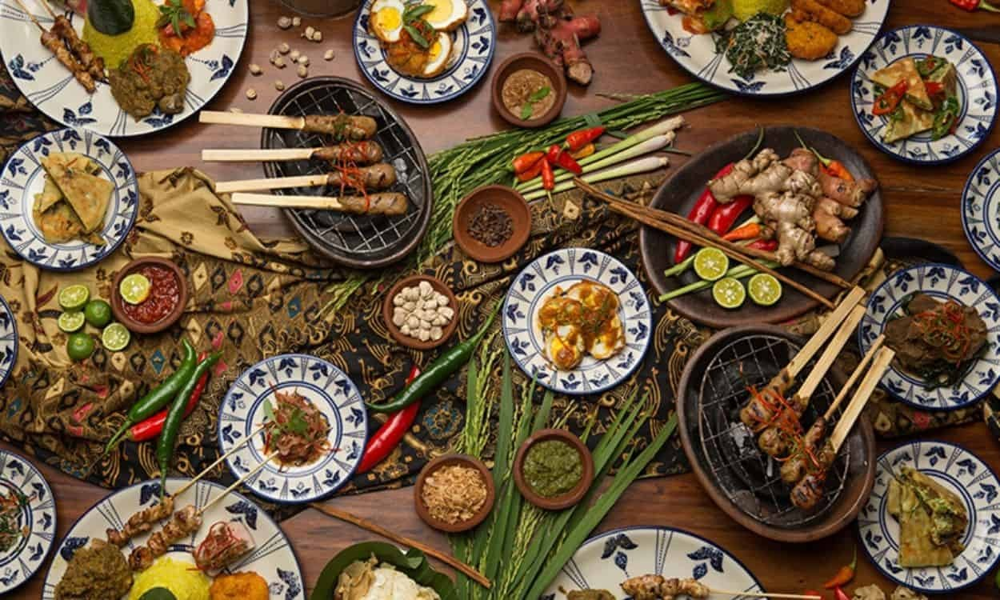

Kuliner Binjai
Selamat datang di web Kuliner Binjai!Binjai - Sebutan salam dari Binjai sempat mengemuka di dunia maya beberapa waktu lalu. Di luar tagar yang viral, Binjai ternyata juga punya kuliner nikmat. Binjai tak hanya terkenal akan salamnya yang identik dengan konten merontokkan batang pohon pisang. Selain itu, Binjai juga punya sejumlah kuliner nikmat yang bisa jadi pilihan..